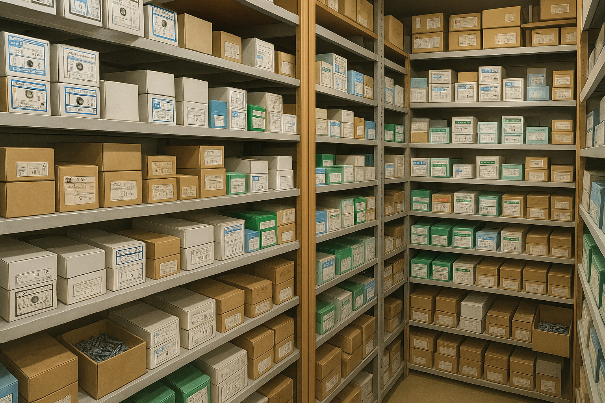

会社名：ササキネジ
代表者：佐々木 誠一
所在地：〒577-0015 大阪府東大阪市長田２丁目１２−５
創業年：1979年
ササキネジは「ねじ1本から真心をこめて」を信条に、創業以来地域のお客様とともに
歩んでまいりました。
現場で求められるスピード、正確性、そして信頼。
これらを徹底的に追求することで、多くの皆様にご支持をいただいております。
小さなパーツにも、大きな信頼が詰まっています。
今後とも皆様の良きパートナーとして、お役に立てる企業を目指して精進してまいります。
代表 佐々木 誠一
ねじや部品を丁寧に管理・保管しています。現場の信頼感とスピード対応が私たちの強みです。
電話番号：06-6785-1222
メール：sasaki-neji1991@vega.ocn.ne.jp
住所：〒577-0015 大阪府東大阪市長田２丁目１２−５